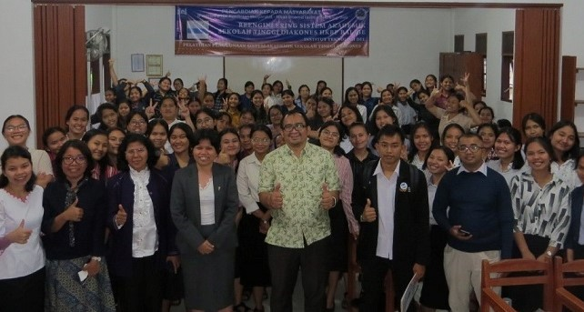

Menjadi lembaga yang unggul dan mandiri dalam pelaksanaan penelitian, khususnya kepada pengembangan dan pemanfaatan teknologi informasi dan komunikasi, dan pengabdian kepada masyarakat.
MISI
Mengembangkan sumber daya pendidikan dan pengajaran di kampus dan masyarakat umumnya melalui penelitian dan pemanfaatan hasil penelitian.
Menghasilkan penelitian dan kajian-kajian akademik berkualitas yang memberikan dampak pada pengembangan institusi, baik untuk tingkat lokal, nasional, maupun internasional.
Mendiseminasikan hasil-hasil penelitian melalui seminar, lokakarya, dan media lainnya sehingga mencapai sasaran seluas-luasnya.
Mengembangkan kegiatan pengabdian masyarakat yang profesional, berbasis ilmu pengetahuan dan teknologi, khususnya teknologi informasi dan komunikasi.
Meningkatkan kemampuan dan peran serta dosen dan mahasiswa dalam penelitian dan pemberdayaan pada masyarakat.
Fungsi dan Tugas LPPM IT Del
Bidang Penelitian
A. Internal
Mengkoordinir penelitian di GBK, prodi dan penelitian oleh kelompok atau perorangan.
Menyebarkan informasi yang berkaitan dengan penelitian, misalnya informasi dari Dirjen Dikti atau Kementerian Riset dan Teknologi.
Membantu meningkatkan kemampuan meneliti para dosen IT Del
Mengembangkan kegiatan pengabdian masyarakat yang profesional, berbasis ilmu pengetahuan dan teknologi, khususnya teknologi informasi dan komunikasi.
Meningkatkan kemampuan dan peran serta dosen dan mahasiswa dalam penelitian dan pemberdayaan pada masyarakat.

B. Eksternal
Mendapatkan informasi yang berkaitan dengan penelitian, misalnya dari Direktorat Jendral Pendidikan Tinggi – DepDikBud (informasi tentang Hibah Bersaing, dan lain-lain dana penelitian yang terbuka bagi PTS). Juga dengan instansi pemerintah, non-pemerintah, dan donor internasional lainnya, misalnya informasi insentif riset dari Kementerian Riset dan Teknologi.
Mengembangkan jejaring penelitian bersama dengan Politeknik yang ada di Indonesia.
Mengembangkan jaringan kerjasama penelitian dengan pemerintah daerah dan berbagai Perguruan Tinggi di Sumatera Utara, Indonesia dan manca Negara.
Bidang pengabdian Masyarakat
A. Internal
Membantu segenap civitas akademik IT Del dalam pelaksanaan kegiatan pengabdian masyarakat agar mendapatkan sasaran yang tepat dan berkesinambungan.
Melaksanakan kegiatan-kegiatan yang mempunyai dampak sosial dan ekonomi kepada masyarakat sekitar kampus IT Del.
Mengembangkan kemampuan mahasiswa dan alumni dalam pengembangan usaha.
Membuat program-program yang bertujuan untuk pengembangan dan penguatan wilayah/daerah sekitar kampus IT Del.
B. Eksternal
Mengembangkan kerjasama dengan masyarakat atau kelompok-kelompok tertentu di sekitar dataran tinggi Toba.
Mengembangkan program-program pelatihan dan pendidikan (kursus) bagi peningkatan kapasitas masyarakat Toba Samosir dan sekitarnya.
Mengembangkan kerjasama dengan institusi-institusi seperti pemda sekitar IT Del, perusahaan-perusahaan swasta, DIKTI, dan lembaga donor.
Mitra Kerjasama IT Del
UPT PP-ESTEM
A. VISI
Sebagai pusat pengembangan pembelajaran yang unggul dan inovasi secara khusus namun tidak terbatas pada bidang Sains, Teknologi, Enginering, dan Matematika (STEM) yang berkualitas, efisien, efektif, produktif, dan akuntabel.
B. MISI
Melakukan kegiatan penelitian terkait metode, media, dan sumber belajar yang inovatif dan berkualitas yang berbasiskan konsep STEM serta pengembangan dan penerapannya dalam kegiatan belajar mengajar di IT Del.
Mengembangkan pembelajaran dengan pendekatan yang berpusat pada mahasiswa (SCL-Student Center Learning) dan penerapannya dalam kegiatan belajar mengajar di IT Del.
Mengembangkan pembelajaran elektronik (e-learning) dan penerapannya dalam kegiatan belajar mengajar di IT Del.
Melakukan kegiatan pelatihan kepada sivitas IT Del dan kepada pihak eksternal terkait dengan pembelajaran yang inovatif berbasiskan STEM dan SCL.
Menjalin kerjasama dengan pihak eksternal seperti pemerintah, institusi pendidikan lain, dan juga industri dalam pengembangan dan penerapan pembelajaran yang inovatif.
C. TUJUAN
Meningkatkan kemampuan sivitas dalam melaksanakan pembelajaran yang inovatif berbasis STEM, SCL, dan elektronik.
Meningkatkan kemampuan lulusan dengan serapan kerja yang tinggi yang dibutuhkan industri dan masyarakat.
Meningkatkan kemampuan tenaga pengajar di lembaga pendidikan yang menjadi mitra dalam melaksanakan pembelajaran yang inovatif berbasis STEM, SCL, dan elektronik.
Struktur Organisasi UPT PP-ESTEM di Institut Teknologi Del